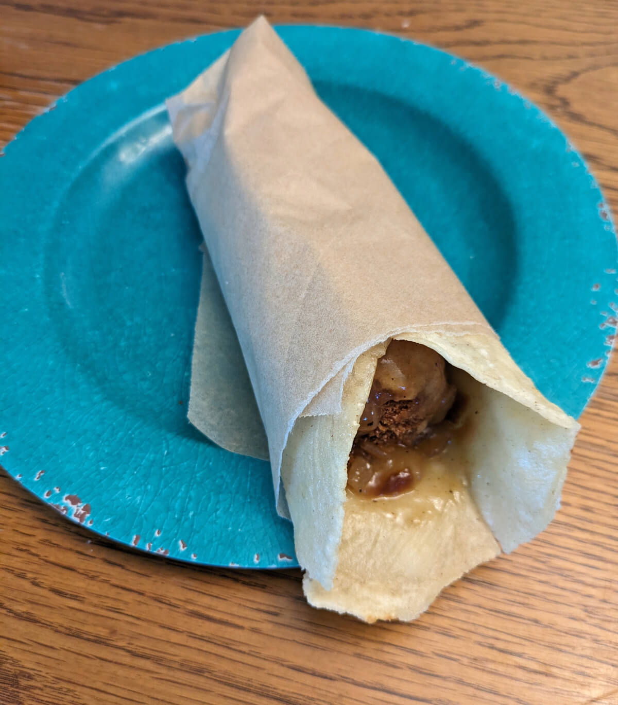

Chouta

Description
Cuisine: Herdazian
Deep fried meatballs or crab, wrapped in flatbread and smothered
in gravy.
It seemed to be chunks of undefinable meat slathered in some
dark liquid, all wrapped in overly thick bread. (Words of
Radiance, ch 18) Look. He’s frying that bread. "You fry the
flangria too," Lopen said. "Make little balls of it, mixed with
ground lavis. Batter it up and fry it, then stuff it in
fried bread and pour on gravy. (Words of Radiance, ch 46)
Ingredients
Gravy
- ¼ cup coconut oil
- 2 onions diced
- 1 teaspoon salt
- ½ teaspoon garam masala
- ½ teaspoon cumin, ground
- ½ teaspoon coriander, ground
- 4 cloves garlic, minced
- 2½ cups water, divided
- 2 tablespoons oyster sauce
- 3 tablespoons corn starch
Flangria (meatballs)
- 1 12 oz. can low sodium luncheon meat (Spam)
- 2 cloves garlic
- ½ onion
- ½ teaspoon coriander, ground
- ½ teaspoon cumin, ground
- 1¼ cup Mexican-style corn flour (Maseca), divided
- 1 cup water
- vegetable oil for frying
Cremling claws (soft shell crabs)
- 5 soft shell rabs
- 1 cup Mexican-style corn flour (Maseca), divided
- 1 cup water
- vegetable oil for frying
Bread
- 2 cups Mexican-style corn flour (Maseca)
- 1½ cups water, plus additional as needed
- vegetable oil for frying
Steps
-
For the gravy, melt the coconut oil in a frying pan over
low heat. Add the 2 diced onions and 1 tsp salt. Continue
cooking, stirring occasionally, for 30-45 minutes or until
golden brown.
-
Meanwhile, for the flangria option, combine the Spam, 2
cloves garlic, ½ onion, ½ tsp coriander and ½
tsp cumin in a food processor. Process until combined.
Knead in ¾ cup Maseca. Form into 1 inch balls. Set aside.
-
For the cremling claws option, defrost and clean 4 soft
shell crabs. Rinse the crabs, then pat dry. Dip in ½
cup Maseca to coat.
-
For both flangria and cremling claws options, combine ½
cup Maeca and 1 cup water to form a batter. Coat the flangria
balls or crabs in batter, then deep fry at 350 degrees Fahrenheit. Flangria - fry gently. If they lose their coating they'll fall apart. Cook until golden brown. Cremling claws - fry, flipping a few times, until golden on both sides.
-
For the bread, combine 2 cups maseca and 1 ½ cups water.
Knead well. If it's too dry, knead in a little more water.
You should be able to press a ball of dough into a thick disk
without the edges cracking.
-
Form ½ cup of dough into a ball. Place between two
sheets of parchment paper, then roll into a 8 inch circle.
Cook on a griddle or dry pan over medium high heat, flipping
once. Both sides should have just a couple spots of brown.
Repeat with the rest of the dough.
-
One at a time, fry the bread in 350 degree oil, flipping
once, for not too long. The bread should puff and stiffen,
but not get crispy.
-
For the gravy, once the onions are browned, add ½ tsp
garam masala, ½ tsp cumin, ½ tsp coriander, and
the 4 cloves minced garlic. Cook 2 minutes over medium-high
heat. Add 2 cups water and 2 Tbsp oyster sauce, then bring
to a boil. In a separate small container, combine ½ cup
water and 3 tbsp corn starch, mix well. Add to onion mixture,
then cook and stir until thickened.
-
To assemble chouta, take a piece of bread, place 4 flangria
balls in a line (or 1 crab). Cover with a few spoonfuls of
gravy, then wrap bread closed. Wrap in parchment paper if desired.